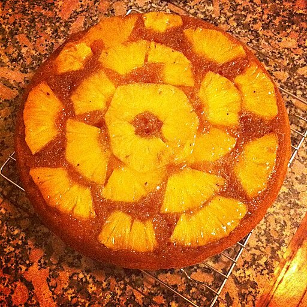

Upside Down Pineapple Cake
An easy to make cake

Ingredients
For the Toppings
- 1/4 melted butter
- 1/2 brown sugar
- 1 20oz can of pineapple rings in juice
- 1 jar of maraschino cherries
For The Cake Batter
- 1 1/3 all-purpose flour
- 1 tsp of baking powder
- 1/2 kosher salt
- 1/4 butter, softened
- 1/2 granulated sugar
- 1/4 packed brown sugar
- 1 large egg
- 1 tsp of pure vanilla extract
- 1/4 sour cream
- 1/4 pineapple juice from can used for topping
Directions
- Step 1
Preheat oven to 350 degrees f and grease a round 9" cake pan
- Step 2
Make topping: Mix butter with brown sugar and add to prepared cake pan.
Let mixture spread to the edges then add seven pineapple rings.
Place cherries inside and in between pineapple slices.
- Step 3
Make Batter: In a small bowl, whisk together flour, baking powder and salt.Set aside.
In a large bowl using a hand mixer or a large spoon, mix cream butter with sugars.
Beat in egg, vanilla, and sour cream, then slowly beat in flour mixture and pineapple juice until just combined.
- Step 4
Spoon the batter over the pineapple gently spreading out in a even layer
- Step 5
Bake until cake is golden and a toothpick come out clean, about 35 minutes.
- Step 6
Remove from oven, wait five minutes and flip cake upside-down onto the serving platter.
Wait thirty seconds more, then carefully lift pan off. Let it cool completely before slicing and serving